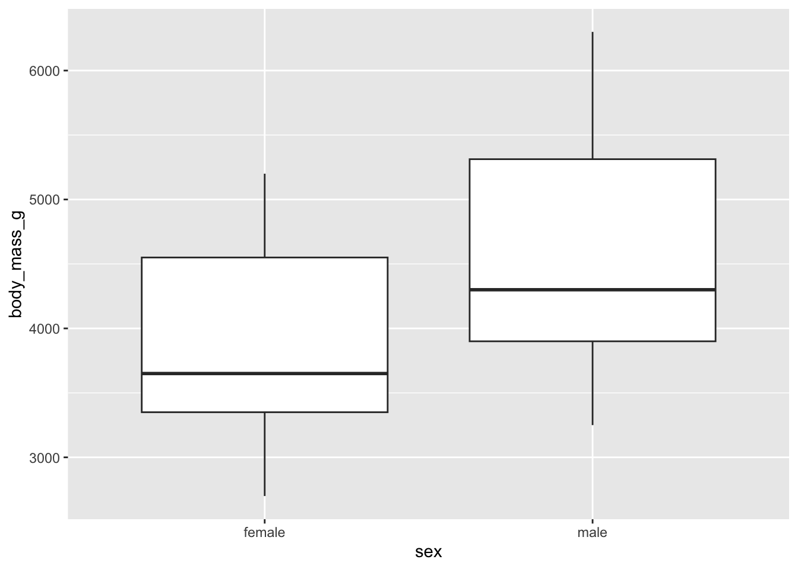
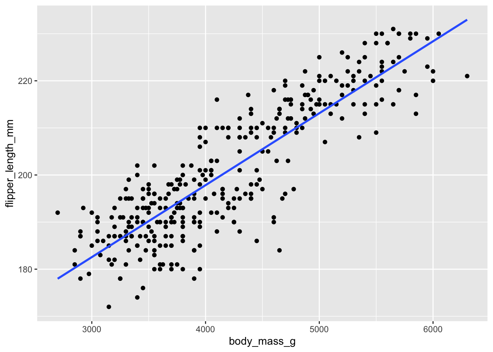
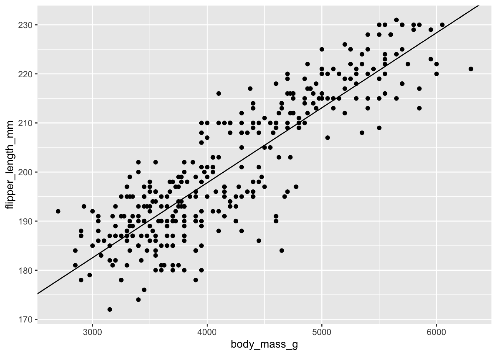
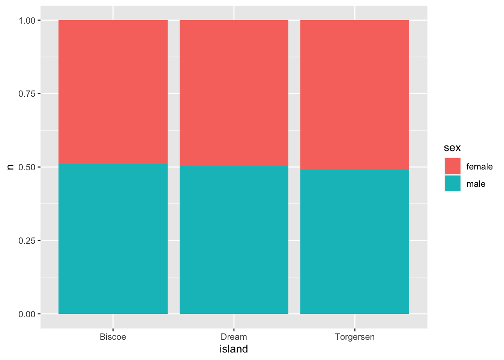
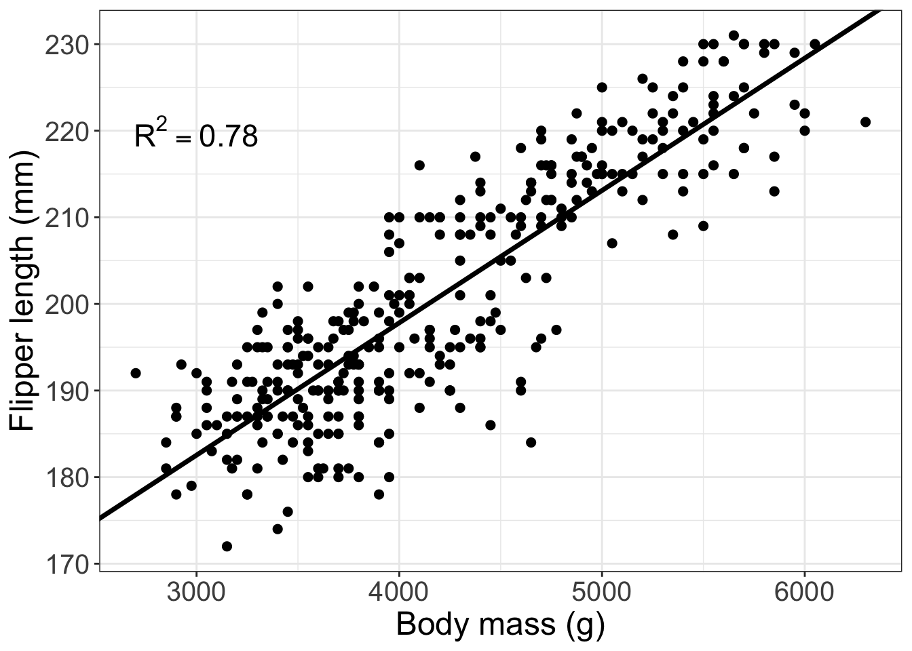

install.packages(c("palmerpenguins", "tidyverse", "multcomp"))
library(multcomp)
library(palmerpenguins)
library(ggplot2)
library(tidyverse)Introduction to Statistics in R
Learning Goals:
- Review common statistical tests.
- Learn how to run these statistical tests in R.
Overview of this workshop
In this workshop, we are going to re-introduce common statistical tests you have already been introduced to in JMP. We will review what kinds of data require different statistical tests and learn how to run these statistical tests in R. We will walk through how to get summary statistics for each test in R so that you can use these in scientific reports.
You will need these R packages installed and loaded:
Review of key statistics terms
Hypotheses: testable statements of expectation or prediction.
Null hypothesis: sample means are not different.
Alternative hypothesis: sample means are different.
Degrees of freedom: the number of replicates minus the number of groups you are testing (usually, but varies by test)
Loading our example dataset

For the examples below, I’m going to be using an ecological dataset on penguins from Palmer Station in Antarctica.
#get the penguins dataset from the palmerpenguins package
penguins <- palmerpenguins::penguinsWhat data do we have in the penguins dataset?
str(penguins)tibble [344 × 8] (S3: tbl_df/tbl/data.frame)
$ species : Factor w/ 3 levels "Adelie","Chinstrap",..: 1 1 1 1 1 1 1 1 1 1 ...
$ island : Factor w/ 3 levels "Biscoe","Dream",..: 3 3 3 3 3 3 3 3 3 3 ...
$ bill_length_mm : num [1:344] 39.1 39.5 40.3 NA 36.7 39.3 38.9 39.2 34.1 42 ...
$ bill_depth_mm : num [1:344] 18.7 17.4 18 NA 19.3 20.6 17.8 19.6 18.1 20.2 ...
$ flipper_length_mm: int [1:344] 181 186 195 NA 193 190 181 195 193 190 ...
$ body_mass_g : int [1:344] 3750 3800 3250 NA 3450 3650 3625 4675 3475 4250 ...
$ sex : Factor w/ 2 levels "female","male": 2 1 1 NA 1 2 1 2 NA NA ...
$ year : int [1:344] 2007 2007 2007 2007 2007 2007 2007 2007 2007 2007 ...We can see from the str() function that the penguins dataset has a set of bill, flipper, and body mass measurements for penguins from a set of species from different islands. These individuals are also different sexes and from different years.
Summary statistics in R
Maybe even before you start analyzing your data, you may be interested in the distribution of your data, especially within and across groups. You can calculate common summary statistics using functions in R.
#mean body mass of penguins
mean(penguins$body_mass_g) [1] NA#the $ operator tells R to treat the column in that dataframe like a vectorIf any of our data are NA values - the mean() function will tell us that the mean is also NA. This is not helpful! There is an additional argument in the mean function that lets us bypass this:
#get the mean body mass of penguins and remember to remove NA values!
mean(penguins$body_mass_g, na.rm = T)[1] 4201.754You could also look at the means across groups using the tidyverse
penguins %>%
#group the penguins dataset by sex
group_by(sex) %>%
#look at the mean body mass by sex
summarise(mean = mean(body_mass_g, na.rm = T))# A tibble: 3 × 2
sex mean
<fct> <dbl>
1 female 3862.
2 male 4546.
3 <NA> 4006.T-tests
USE: T-tests test differences in the mean of two groups.
Using the penguins dataset, we could come up with a number of ways that this dataset is “grouped”. One of the “groups” that only has two categories is sex, so we can use a t-test to test for differences in mean body measurements between male and female penguins. Let’s start by examining body mass.
What is the hypothesis?
What is the null hypothesis?
What is the alternative hypothesis?
We can use the t.test() function to test whether penguins of different sexes have different mean body masses.
#is there a difference in body mass by sex in the penguin dataset?
t.test(penguins$body_mass_g ~ penguins$sex)
Welch Two Sample t-test
data: penguins$body_mass_g by penguins$sex
t = -8.5545, df = 323.9, p-value = 4.794e-16
alternative hypothesis: true difference in means between group female and group male is not equal to 0
95 percent confidence interval:
-840.5783 -526.2453
sample estimates:
mean in group female mean in group male
3862.273 4545.685 This summary shows us three important statistics, including the t-statistic (t), the degrees of freedom (df), and the p-value (p-value). It also gives us the means for each group.
Remember, if you are running t-tests in a scientific paper, you will want to report the t-statistic, degrees of freedom, and p-value. In this case, running the t.test() function provides an output of all of these values for you.
We can look at the differences in penguin mass by sex by plotting these data using the ggplot() function in the ggplot2 package.
First, above we noticed that there are NA values in the sex column, so we will want to remove those rows from the dataset using the filter() function. This doesn’t actually matter for the t-test itself, but makes the visualization make sense:
penguins_2 <- penguins %>%
#filter() removes or keeps rows based on conditions
filter(!is.na(sex)) #! tells R "not" and the is.na() function tests for NA values
# so this filter is looking at the "sex" column in the dataset and keeping all rows
# where "sex" is *not NA*ggplot(data = penguins_2, #the dataset we want to visualize
mapping = aes(x = sex, #the "aesthitics" aka what is "x" and "y"?
y = body_mass_g)) +
geom_boxplot() #what kind of plot do we want to plot? I've chosen a boxplot.
We can see that, even across species, that we have to reject the null hypothesis that “female and male penguins are the same body mass”
ANOVA
USE: Tests differences between two or more groups.
The penguins dataset also has the potential for us to test across more than two levels of one group (one-way ANOVA) or across different combinations of groups (two-way ANOVA). For example, we could look at body mass across species (one-way ANOVA), or across species and sex (two-way ANOVA).
Why don’t we try the simpler of these two, and just look at how body mass varies across the three different species of penguins in the dataset (one-way ANOVA).
What is the hypothesis?
What is the null hypothesis?
What is the alternative hypothesis?
There are a couple of functions that let us do this, including the oneway.test() function.
oneway.test(body_mass_g ~ species, #body mass differences by species group
data = penguins, #define the dataset we want to use
var.equal = TRUE) # assuming equal variances
One-way analysis of means
data: body_mass_g and species
F = 343.63, num df = 2, denom df = 339, p-value < 2.2e-16And the combiation of the aov() and summary() functions:
penguin_anova <- aov(body_mass_g ~ species, #body mass by species group
data = penguins #define the dataset we want to use
)
#use the summary function to look at the results of the penguin_anova
summary(penguin_anova) Df Sum Sq Mean Sq F value Pr(>F)
species 2 146864214 73432107 343.6 <2e-16 ***
Residuals 339 72443483 213698
---
Signif. codes: 0 '***' 0.001 '**' 0.01 '*' 0.05 '.' 0.1 ' ' 1
2 observations deleted due to missingnessIn the oneway.test() function above, we see that we get an f-statistic (F), the degrees of freedom for our group (num df), and a p-value (p-value). We get similar results from the two-step process using aov() and summary(). In this case, the values are presented as a table, in which we are interested in the species row, with F being the f-statistic, Df being the degrees of freedom, and Pr(>F) being the p-value.
Remember, if you are using an ANOVA in a scientific paper, you will want to report the f-statistic, degrees of freedom and p-value.
ANOVAs are a bit different from t-tests because they have multiple “paths”. If you tested for a difference among groups and found no difference (p-value >0.05), then you would stop where we are now and report only the results of the ANOVA test. However, if there is a difference (p-value < 0.05), you might want to know how the species differ from each other. We can do this by performing a post-hoc test like a Tukey’s HSD test. These tests penalize each comparison because you are testing many groups and so might just randomly get a significant value even if the relationship wasn’t significant (type-1 error in statistics).
For this test, we’ll be using the glht() function in the multcomp package, which performs a Tukey’s HSD test on an ANOVA with a significant difference.
# Tukey HSD test:
post_test <- glht(penguin_anova, #define the ANOVA object to test
linfct = mcp(species = "Tukey") #tell the function to run Tukey's
)
#look at the summary:
summary(post_test)
Simultaneous Tests for General Linear Hypotheses
Multiple Comparisons of Means: Tukey Contrasts
Fit: aov(formula = body_mass_g ~ species, data = penguins)
Linear Hypotheses:
Estimate Std. Error t value Pr(>|t|)
Chinstrap - Adelie == 0 32.43 67.51 0.48 0.88
Gentoo - Adelie == 0 1375.35 56.15 24.50 <1e-05 ***
Gentoo - Chinstrap == 0 1342.93 69.86 19.22 <1e-05 ***
---
Signif. codes: 0 '***' 0.001 '**' 0.01 '*' 0.05 '.' 0.1 ' ' 1
(Adjusted p values reported -- single-step method)In this summary, we are interested in the values under the Linear Hypothesis header. each of these is a comparison with the null hypothesis defined (“== 0” means that we’re testing each pair with the null hypothesis that they are not different). The last column in this table Pr(>|t|) gives the adjusted p-value for differences among pairs.
What we can interpret by looking at this table is that the mean body mass for a Gentoo and Adelie penguin are significantly different, and so are the mean body masses for Gentoo and Chinstrap penguins. However, Chinstrap and Adelie penguins do not have clearly different mean body masses.
We can visualize these results again using ggplot() and a boxplot
ggplot(data = penguins, #using the penguins dataset
mapping = aes(x = species, #x axis is each species
y = body_mass_g)) + #y axis is the body mass
geom_boxplot() #what kind of plot are we making - boxplot
It appears that Gentoo penguins are much bigger than both Adelie and Chinstrap penguins, but that Adelie and Chinstrap are relatively similar size.
Linear regression
USE: Tests for relationship different from the mean line of two variables.
We might also be interested in whether penguins with a larger mass had longer flippers, which we can also test using the penguins dataset. For this test, we’ll use a linear regression, since we are interested in the relationship between two continuous variables and how that relationship varies from the mean line.
What is the hypothesis?
What is the null hypothesis?
What is the alternative hypothesis?
For this test, we are going to use the lm() function in conjunction with the summary() function to test for a relationship between body mass and flipper length in penguins.
regression_mod <- lm(flipper_length_mm ~ body_mass_g, #predicting flipper length
#from body mass
data = penguins) #data is the penguins dataset
#look at the summary of this model
summary(regression_mod)
Call:
lm(formula = flipper_length_mm ~ body_mass_g, data = penguins)
Residuals:
Min 1Q Median 3Q Max
-23.7626 -4.9138 0.9891 5.1166 16.6392
Coefficients:
Estimate Std. Error t value Pr(>|t|)
(Intercept) 1.367e+02 1.997e+00 68.47 <2e-16 ***
body_mass_g 1.528e-02 4.668e-04 32.72 <2e-16 ***
---
Signif. codes: 0 '***' 0.001 '**' 0.01 '*' 0.05 '.' 0.1 ' ' 1
Residual standard error: 6.913 on 340 degrees of freedom
(2 observations deleted due to missingness)
Multiple R-squared: 0.759, Adjusted R-squared: 0.7583
F-statistic: 1071 on 1 and 340 DF, p-value: < 2.2e-16This output looks really similar to the output of the aov() and summary() combo for ANOVAs above, which is nice for interpretation across tests! In this case, we might be interested in both rows of the table, since the intercept row gives us an idea of where the “line” of our linear model crosses the y-axis (the “intercept”). However, what we are mostly interested in is the linear relationship between body mass and flipper length, which we can gather from the body_mass_g row. In this table, the Estimate tells you the “slope” of the relationship (line) between body mass and flipper length. In this case, it is a positive value, so larger body mass also means longer flipper length. The next value we are interested in is the Pr(>|t|) column, which gives us the p-value of the relationship between body mass and flipper length. We can also see below the table that we have several \(R^2\) statistics reported. In this case with just one predictor variable, we can look at either, because they are the same. In this case, our \(R^2 = 0.76\), which suggests a strong relationship between body mass and flipper length. You can also see that in this summary we get a degrees of freedom. Remember, for a scientific paper, you would want to report the degrees of freedom and the \(R^2\) value.
We can visualize this linear relationship a couple of ways, either by letting ggplot define the linear relationship using the geom_smooth() layer on the plot, or by defining our own linear relationship using the results of the table from the summary() function above for the intercept and slope values and using the geom_abline() layer on the plot
Version 1:
ggplot(data = penguins, #dataset to visualize
mapping = aes(x = body_mass_g, #x is the body mass
y = flipper_length_mm)) + #y is the flipper length
geom_point() + #put each data point as a "point" layer on the graph
#add a line to the graph that ggplot determines:
geom_smooth(method = 'lm', #method is linear regression model, 'lm'
se = F) #don't show the shaded standard errors
Version 2:
ggplot(data = penguins, #dataset to visualize
mapping = aes(x = body_mass_g, #x is the body mass
y = flipper_length_mm)) + #y is the flipper length
geom_point() + #put each data point as a "point" layer on the graph
#add a line to the graph that you define based on the results
#of the summary() function above
geom_abline(slope = 1.528e-02, #the "Estimate" for body_mass_g from summary
intercept = 1.367e+02) #the "Estimate" for the intercept from summaryWarning: Removed 2 rows containing missing values (`geom_point()`).
Chi-Squared Test
USE: Tests “goodness of fit” for categorical data. Or: is the frequency distribution different from random?
Chi-Squared tests look at the frequency distributions of the occurrence of different combinations of two groups and assess whether the frequency distributions are the same across groups. In the penguins dataset, we might be interested in whether the ratio of male to female penguins is the same across islands. Maybe some islands have more females than others?
What is the hypothesis?
What is the null hypothesis?
What is the alternative hypothesis?
For Chi-squared tests, we need to get the data into the format of a contingency table. This is a fancy word for a table that summaries the frequency (counts) of observations in different combinations of categories. In this case, we are interested in the category of island and the category of sex on each island. We can set up this contingency table using tools we’ve already used in the tidyverse package, including grouping variables by different columns and summarizing by groups. Remember that some of the sex values were NA in the original dataset, so we’ll start with the penguins_2 object we created to visualize the results of the t-test above of body mass by sex.
penguins_3 <- penguins_2 %>%
#get a tally by combinations of island and sex
group_by(island, sex) %>%
tally() #tally() function just counts the number of cases in each combiation
#of the groups you defined
#look at this dataset
penguins_3# A tibble: 6 × 3
# Groups: island [3]
island sex n
<fct> <fct> <int>
1 Biscoe female 80
2 Biscoe male 83
3 Dream female 61
4 Dream male 62
5 Torgersen female 24
6 Torgersen male 23This still isn’t quite a contingency table, but we can use some more tidyverse data manipulation to get us there.
penguins_4 <- penguins_3 %>%
pivot_wider(names_from = sex, #make each sex its own column
values_from = n) %>% #fill those columns with the counts
column_to_rownames(var = "island") #make the island name the row names vs its own column
penguins_4 female male
Biscoe 80 83
Dream 61 62
Torgersen 24 23Now this is a contingency table that we can test with a Chi-squared test! In R, the function we’ll be using is chisq.test()
chisq.test(penguins_4)
Pearson's Chi-squared test
data: penguins_4
X-squared = 0.057599, df = 2, p-value = 0.9716In this case, we see the X-squared statistic, the degrees of freedom (df) and the p-value of the test. We can interpret this that there is no difference in the distributions of male-female across islands because the p-value is > 0.05. In a scientific paper, you would report the X-squared statistic, the degrees of freedom (df) and the p-value.
There are several ways we could visualize these data, but one way might be to present proportional bar graphs of male-female ratios for each island. Now, even though the chisq.test() function wanted some version of the data in a contingency table, we can go back to the “tidy” data we first summarized in the penguins_3 data object
str(penguins_3)gropd_df [6 × 3] (S3: grouped_df/tbl_df/tbl/data.frame)
$ island: Factor w/ 3 levels "Biscoe","Dream",..: 1 1 2 2 3 3
$ sex : Factor w/ 2 levels "female","male": 1 2 1 2 1 2
$ n : int [1:6] 80 83 61 62 24 23
- attr(*, "groups")= tibble [3 × 2] (S3: tbl_df/tbl/data.frame)
..$ island: Factor w/ 3 levels "Biscoe","Dream",..: 1 2 3
..$ .rows : list<int> [1:3]
.. ..$ : int [1:2] 1 2
.. ..$ : int [1:2] 3 4
.. ..$ : int [1:2] 5 6
.. ..@ ptype: int(0)
..- attr(*, ".drop")= logi TRUEggplot(data = penguins_3, #the "tidy" summarised island-sex penguin dataset
mapping = aes(x = island, #x is the island
y = n, #y is the count of male-female on each island
fill = sex)) + #color of the bar portion is sex
geom_bar(stat = "identity", #tell geom_bar that we want to see each group
position = "fill") #make each proportional to 1 in that group
As you can see visually - there are no clear differences in the sex ratios per island.
Final notes:
A word of caution about statistics
All of these tests come with underlying “assumptions” about the data you are fitting to the tests. This is the subject matter of entire semester-long statistics courses, but I just wanted to caution not to use tests as presented here and assume they are “right”, especially for ecological data. Ecological data tends to have unequal sample sizes, weird data distributions, and many other attributes that mean many of these tests are not always the most proper tests to use. The statistics resources linked on the bottom of the workshop website would be a great place to start diving deeper into the messy world of ecological statistics!
Visualizations
One of the great things about ggplot2 is that you can also put the text of summary statistics and indicators in to graphs. So, for a linear regression, you could put the \(R^2\) value of the relationship somewhere on the graph. It’s somewhat outside the scope of the introductory nature of the material I presented today, but online forums have great tutorials on how to do this. Also, just a keyword hint, annotate() layers in ggplot() let you add all kinds of fun text and other symbols.
Here’s a figure I might put in a paper for a linear regression:
#make a label for the annotation of the graph
label <- paste("R^2 == 0.78")
ggplot(data = penguins, #dataset to visualize
aes(x = body_mass_g, #x is body mass
y = flipper_length_mm)) + #y is flipper length
geom_point(size = 2) + #make a point layer for the data points and
#make the size of the points a bit bigger with the 'size' argument
#then, make a line that is defined from the summary function above?
geom_abline(slope = 1.528e-02, #the "Estimate" for body_mass_g from summary
intercept = 1.367e+02,#the "Estimate" for the intercept from summary
size = 1.25) +# make this line a bit thicker
theme_bw() + #set a custom theme to get rid of the grey background
annotate(geom = "text", #add text to the figure
x = 3000, y = 220, #where in x and y is the text?
label = label, #the text should be the label object you created above
size = 6, #how big should the text be?
parse = T) + #this tells the layer to make the 2 a superscript
labs(x = "Body mass (g)", #make a nicer version of the x axis label
y = "Flipper length (mm)") + #make a nicer version of the y axis label
theme(axis.text = element_text(size = 15), #make the axis text a bit bigger
axis.title = element_text(size = 18)) #make axis titles a bit bigger